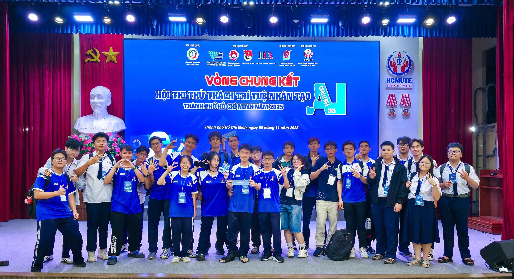
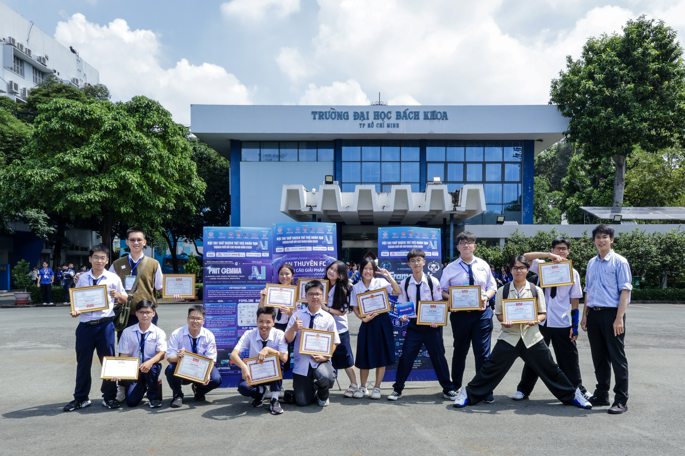

DẤU ẤN HỌC SINH · TRÍ TUỆ NHÂN TẠO
Từ ý tưởng đến sân chơi AI


Mỗi ý tưởng là một cơ hội vận dụng kiến thức, làm việc nhóm và giải quyết vấn đề. Học sinh học cách thử nghiệm, kiểm chứng và hoàn thiện sản phẩm AI.
Từ bài toán đến sản phẩm
Chọn một nhu cầu gần gũi, xác định dữ liệu và cách đánh giá. Chia nhóm để tìm hiểu, lập trình, thử nghiệm và trình bày giải pháp.
Giá trị nằm ở quá trình học
Giải thích vì sao chọn cách làm; nhận diện giới hạn của sản phẩm. Mỗi lần kiểm thử giúp rèn tư duy phản biện và tinh thần hợp tác.